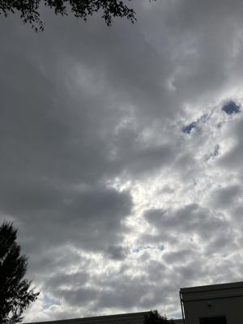
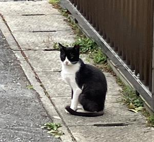
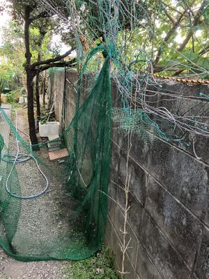

うるがいの話 ある日
最新: 猫の近況【うるがいの話 ある日】とは 一日だけのプログです
『うるがいの話』の最新一日だけのプログで、通信料が少なく経済的だ。カニの画像をクリックすると全ての日付が載る『うるがいの話』サイトを表示します
|
|
【うるがいの話】 うるがい(ｳﾙｶﾞｲ urugai)とは、『もずくがに』の名前でとても大きくなります。 |
|---|---|
|
|
【カミマヤーの話】 猫のことを方言でマヤーといいます。カミマヤー（kamimayaa）とは、神の猫のことです。 |
|
【たながぁの音楽】 たながぁ（ﾀﾅｶﾞｰ tanagaa）とは手長えびのことで、何種類かあり大きいのは車 エビぐらいになります。 |

|
【ぶながぁの話】 ぶながぁ(ﾌﾞﾅｶﾞｰ bunagaa)とは、赤い髪の毛、赤い身体、そして身長は１ｍ２０ｃｍ ぐらい、川の蟹を食べているの目撃された。場所は沖縄県国頭郡大宜味村のと ある村僕の隣近所に住んでいる爺さんから、聞いた話です。 |
|
|
【ギーマの話】 ギーマ(giima)とは、山原の里山に咲くスズランに似た、 花を付けます。実は食べられます、 気が付くと口の周りが紫になっています。 |
2026年03月16日 (月）猫の近況
15:47

環衛第7-71-1号令和8年2月26日
飼い主のいない猫の
不妊去勢手術の実施について
地域の飼い主のいない猫に不妊去勢手術を実施し、繁殖(増加)の
抑制を図ることにより、糞尿被害、道路上の轢死等の環境衛生上
の問題を軽減することを目的に、地域に生息する飼い主のいない
猫に対する不妊去勢手術を実施したいと考えております。つきま
しては、地域住民の方による猫の保護を行います。
捕獲実施期間: 令和8年3月3日(火)～3月31日(火)
【地域住民のみなさまへのお願い】
1猫を飼っている方は飼い猫を室内で飼育するようお願い致します
2飼い猫には、常に迷子札等の所有者明示を必ずしてください。
不好去勢手術が済んだ猫は、
耳先をカットします。
那覇市環境衛生課の職員が、チラシを配ったのは先月末だった。
糞尿被害、道路上の轢死等の環境衛生上の問題を軽減すること！
確かに、ご近所のおかげで迷惑しています。
猫を飼っている方は飼い猫を室内で飼育するようお願い致します
確かに、そうですよ！。家の中でいれず、外で餌だけをあげるの
です。チラシのおかげか、やっと不妊去勢手術を行ったようです
。４匹のうち、３匹は済、１匹のオス猫は逃げ回ってマダのよう
ですが。写真は、毎年子猫を生んだメス猫です。左側の耳がカッ
トされています。これで、暫くは子猫を見ることはない筈。

家の猫の通り道に、ネットをはりました。裏庭の糞は減っていま
す、少しは効果があるようです。前庭は、相変わらず糞をします
。恐らく、この辺りの庭のある家は皆さん、被害にあっていると
思います。誰かさんが、那覇市環境衛生課に通報したのでしょう
。いつ、猫がいなくなるのでしょうか。
